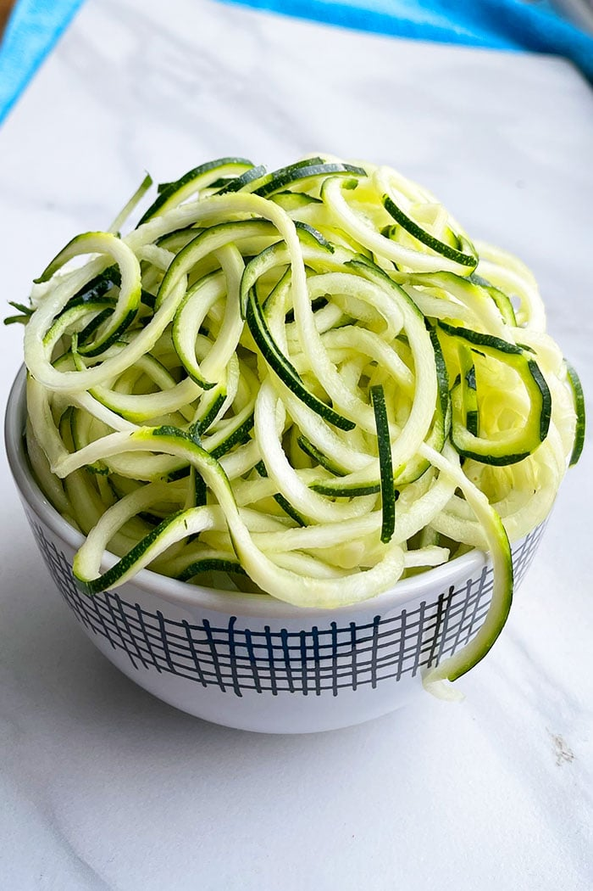

Zoodles

Description
Zoodles
Ingredients
- 650 (g) zucchini, spiralized
- 2 tbsp olive oil
- salt and ground black pepper
Instructions
- Bring a large pot of water to a boil.
- Place the zoodles in the boiling water for just one minute, and then drain in a colander.
- Transfer the zoodles to a serving platter, drizzle with olive oil, and season with salt and pepper to taste.
Nutrients
| Carbs |
Protein |
Fat |
Calories |
Fibre |
Sugar |
Sodium |
Calcium |
Sat |
GL |
| (g) |
(g) |
(g) |
(kCal) |
(g) |
(g) |
(mg) |
(mg) |
Fat (g) |
|
| 1.69 |
1.12 |
3.24 |
40.41 |
1.00 |
1.64 |
129.64 |
18.00 |
0.46 |
0.26 |
Back to top of page